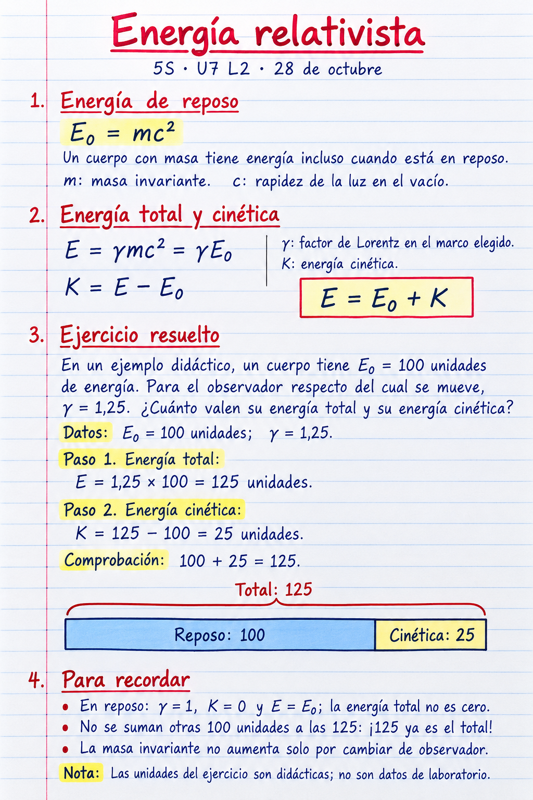

5S U7 L2
Miércoles 28 de octubre
Nota de cuaderno · Energía relativista

Abrir o descargar la imagen de cuaderno

Viernes 30 de octubre
Ciencia y ficción con dos relojes
Analizamos un fragmento breve de Lightyear o el mismo caso dibujado si no hay una copia autorizada. No vemos el largometraje completo ni tratamos la película como un experimento.
- ¿Qué reloj acompaña a la nave y cuál permanece con el otro grupo?
- ¿Qué intervalos transcurren para cada grupo en la historia?
- ¿Qué idea física ayuda a interpretar la diferencia y qué parte es ficción?
En parejas dibujamos dos líneas temporales; después cada estudiante explica una diferencia y un límite del ejemplo. Las cifras y tecnología de la película no se aceptan como modelo numérico correcto.
No aplicamos automáticamente el sencillo γ = 1,25 al viaje completo de la película. La relatividad especial no convierte este caso en un viaje al pasado. El producto es explicar y revisar, no copiar otra hoja de fórmulas.